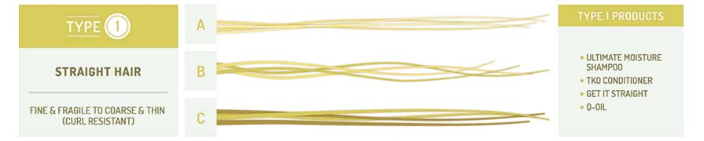
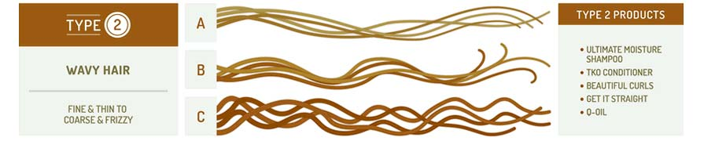
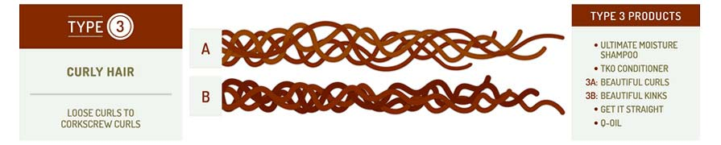
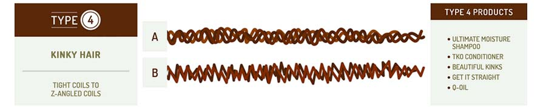

please take the quiz when ready can be found on the next page named "Quiz"
Type 1A hair is the least common, but any type 1 hair can cause a love-hate relationship. It’s soft to the touch and frizz-free, but also stubborn and hard to handle.
Type 1A is straight as a pin, soft, shiny, a bit wispy, and doesn’t hold curls well.
Type 1B is mostly straight, but with more body than type 1A.
Type 1C is generally straight, but with body and a bit of bend.

You’ve seen the advertisements and social media posts showing off the coveted “beach hair” look. Those models have type 2 wavy hair. If you share their hair type, then your locks can be curled or straightened.
Type 2a is fine and thin with a loose "S" pattern, and it’s generally easy to manage.
Type 2b is medium thickness with a more defined S shape, prone to frizz and harder to manage.
Type 2c is coarse and thick with a prominent S pattern, almost curly, and it’s difficult to style.

If your curls easily wrap around the sidewalk chalk, then you have type 3A hair. If the permanent marker is the best fit, then your hair type is 3B. If your spiral curls are the size of a pencil, you have type 3C hair.
Type 3a is loosely curly hair with S-shaped curls that may lack volume and appear flat.
Type 3b has more tightly curled S-pattern curls or loosely spiraled curls with more volume than type 3A.
Type 3c is tight spiral curls are densely packed, have a tendency to coil, yet are prone to dryness

Every level of type 4 hair differs with unique curls, kinks, and coils. Knowing your hair type is like unlocking a secret code to the beauty of your hair – and we have the cheat codes to share with you!
Type 4a is tightly curled and has an S pattern when stretched out with the least amount of shrinkage.
Type 4b is tight coils in a Z pattern with a high level of shrinkage, and the coils are not well-defined without styling products.
Type 4c s tight, close coils with the highest level of shrinkage and least amount of definition.
